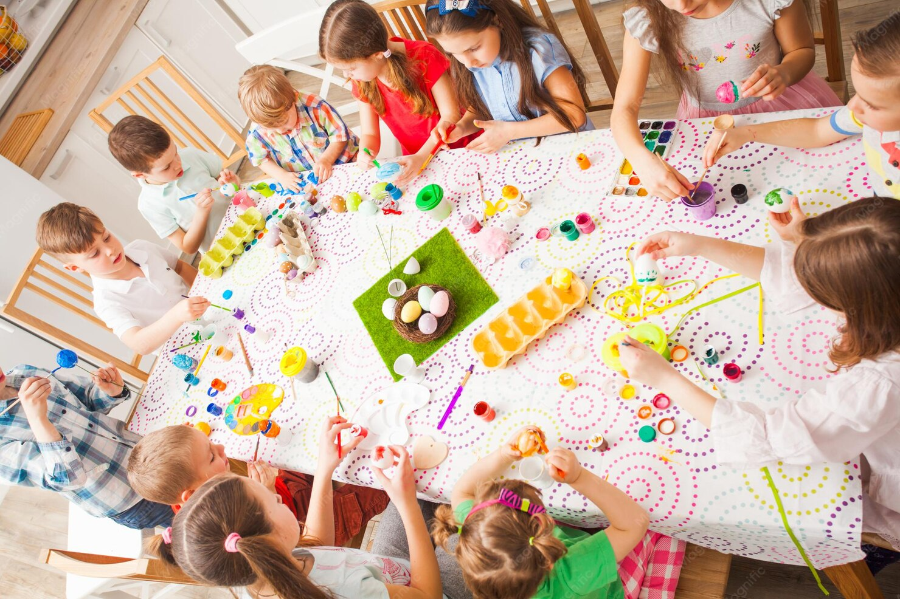
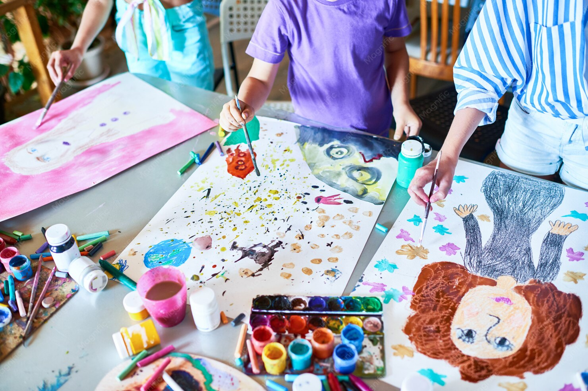
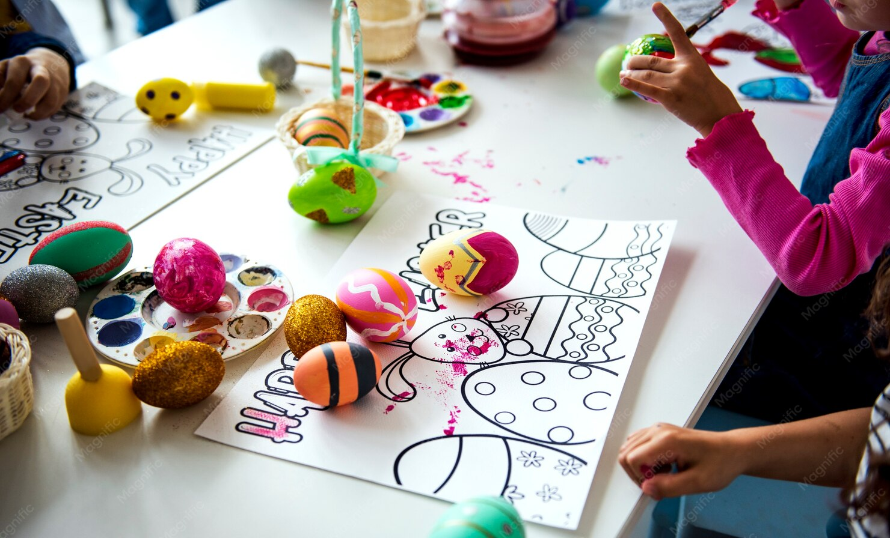
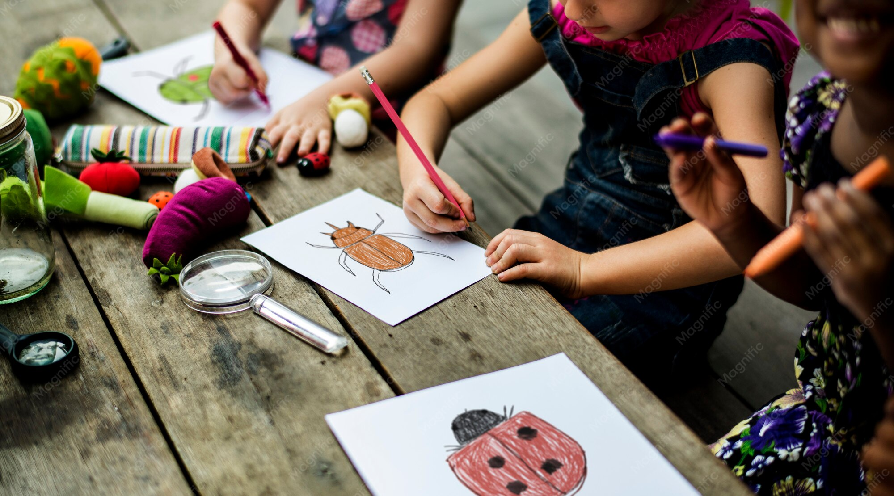

Вторник
рисование
рисование

для детей разных возрастов
из бумаги и картона
примерно 7–8 лет
из бумаги и картона
примерно 8–10 лет
4+
Мини-группы до 8 детей
рисование
рисование
рисование
рисование
рисование
рисование
архитектурные проекты
из бумаги и картонапримерно 8–10 лет
объёмное моделирование из бумагипримерно 7–8 лет
рисованиепримерно 6–8 лет
рисование
мастерилки 4+
10 € / час · 15 € / 1,5 часа · по субботам 13 € / занятие Возраст в субботних группах указан ориентировочно.




Творческий праздник для группы до 10 детей в Tiny Art Club.
Посмотреть темыГородской творческий лагерь в Варне: проекты, прогулки, настольные игры и музеи.
Для детей 6–10 лет · до 12 детей
12 тематических недель · программа 2027 готовится.